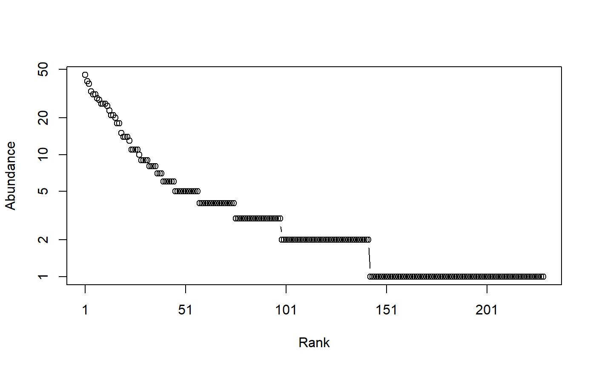

Diversity.RdCalculates the HCDT (generalized) diversity of order \(q\) of a probability vector.
Diversity(NorP, q = 1, …) bcDiversity(Ns, q = 1, Correction = "Best", CheckArguments = TRUE) # S3 method for ProbaVector Diversity(NorP, q = 1, …, CheckArguments = TRUE, Ps = NULL) # S3 method for AbdVector Diversity(NorP, q = 1, Correction = "Best", Level = NULL, …, CheckArguments = TRUE, Ns = NULL) # S3 method for integer Diversity(NorP, q = 1, Correction = "Best", Level = NULL, …, CheckArguments = TRUE, Ns = NULL) # S3 method for numeric Diversity(NorP, q = 1, Correction = "Best", Level = NULL, …, CheckArguments = TRUE, Ps = NULL, Ns = NULL)
| Ps | A probability vector, summing to 1. |
|---|---|
| Ns | A numeric vector containing species abundances. |
| NorP | A numeric vector, an integer vector, an abundance vector ( |
| q | A number: the order of diversity. Default is 1. |
| Correction | A string containing one of the possible asymptotic estimators: |
| Level | The level of interpolation or extrapolation. It may be an a chosen sample size (an integer) or a sample coverage (a number between 0 and 1). |
| … | Additional arguments. Unused. |
| CheckArguments | Logical; if |
Diversity calls Tsallis to calculate entropy and transforms it into diversity by calculating its deformed exponential.
Bias correction requires the number of individuals to estimate sample Coverage. Use bcDiversity and choose the Correction.
The functions are designed to be used as simply as possible. Diversity is a generic method. If its first argument is an abundance vector, an integer vector or a numeric vector which does not sum to 1, the bias corrected function bcDiversity is called. Explicit calls to bcDiversity (with bias correction) or to Diversity.ProbaVector (without correction) are possible to avoid ambiguity. The .integer and .numeric methods accept Ps or Ns arguments instead of NorP for backward compatibility.
Diversity can be estimated at a specified level of interpolation or extrapolation, either a chosen sample size or sample coverage (Chao et al., 2014), rather than its asymptotic value.
A named number equal to the calculated diversity. The name is that of the bias correction used.
Marcon, E., Scotti, I., Herault, B., Rossi, V. and Lang, G. (2014). Generalization of the partitioning of Shannon diversity. PLOS One 9(3): e90289.
# Load Paracou data (number of trees per species in two 1-ha plot of a tropical forest) data(Paracou618) # Ns is the total number of trees per species Ns <- as.AbdVector(Paracou618.MC$Ns) # Species probabilities Ps <- as.ProbaVector(Paracou618.MC$Ns) # Whittaker plot plot(Ns)# Calculate diversity of order 1, i.e. Shannon's diversity Diversity(Ps, 1)#> None #> 113.98# Calculate it with estimation bias correction Diversity(Ns, 1)#> UnveilJ #> 138.8377